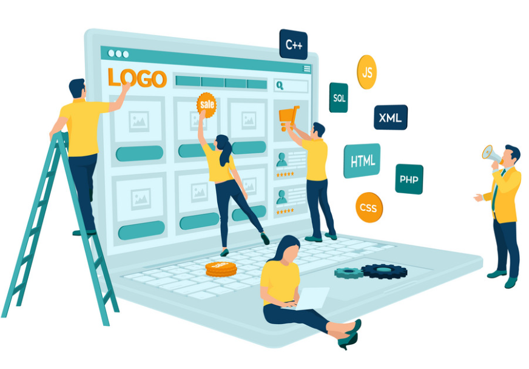

Projets récents

Construction de mon site
Construire mon site web a été une expérience marquante, car c'était l'opportunité de concrétiser mes compétences en programmation tout en créant quelque chose qui me ressemble.
Voir le projet se réaliser a renforcé ma passion pour l'informatique et m'a permis de relever des défis techniques enrichissants.

Projets en dévelopement
Des projets en développement seront bientôt disponibles ici. Actuellement, je travaille sur plusieurs idées qui verront prochainement le jour.
Ces projets refléteront l'évolution de mes compétences et mon engagement dans le domaine du développement.
Me suivre sur les réseaux